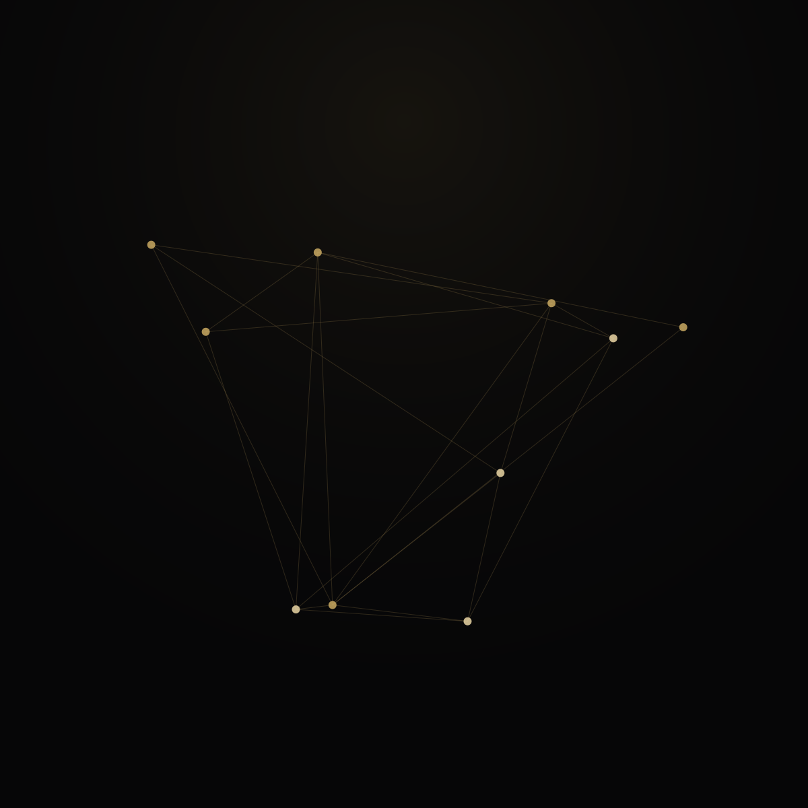
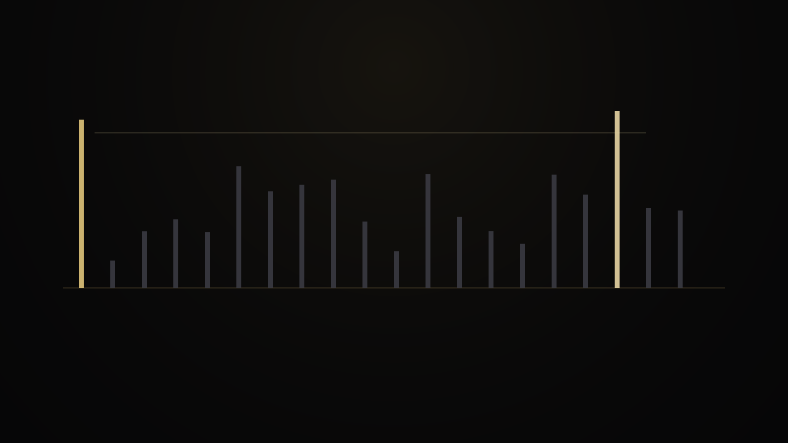
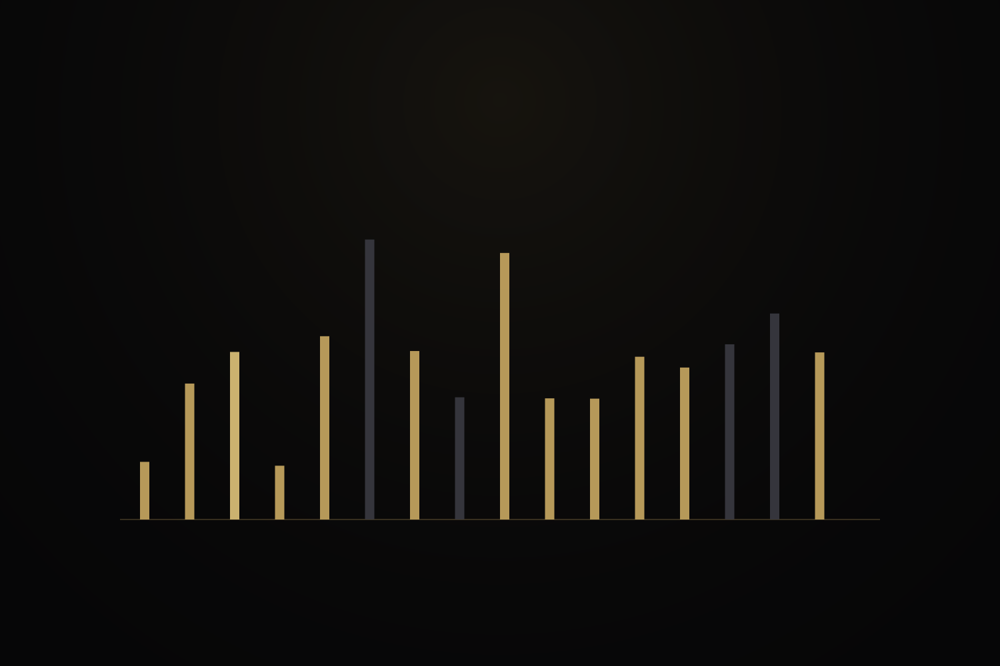

06 · Evidence
Measured surfaces, exact regimes
Public map of implementation and experiment evidence. Every row is a tested regime. None of these tables is a substitute for universal theorems in PROOF.md.





| Regime | Record | Notes |
|---|---|---|
11 .. 1,000,000 | 78494 / 78494 · 0 unresolved · 0 audit failures | Generator surface |
11 .. 100,000 | 9588 / 9588 exact outputs | Production path |
10^8 … 10^18 | 2816 / 2816 | Decade windows |